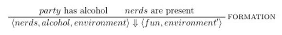

Due Thursday, December 15, at 10:00PM.
The purpose of this assignment is to help you get acquainted with your fellow classmates after a strugglebus of a semester. The assignment is divided into two parts.
Working on your own, please solve Exercise M.
If you would prefer not to request a module, please skip this problem.
Exercise M. Request a module for use in uParty. The script
to request modules for this assignment is in
/h/mberns01/request-modules. You will need to provide the request
script with your Venmo username and number of desired modules. If you do not
have a Venmo account, you must either create one or bring cash. A sample
interaction with the script looks as follows:
$ /h/mberns01/request-modules
What is your Venmo username? A-Sad-Student
The cost per module is $X.
How many modules would you like to request? 5
Thank you and have a nice day!
For students without a Venmo account, the interaction should look as follows:
$ /h/mberns01/request-modules
What is your Venmo username? NONE
The cost per module is $X+1.
How many modules would you like to request? 5
Thank you, please bring cash, and have a nice day!
Notes:
NONE is special in its capitalization.BringYourOwn being raised.
For these problems, you are encouraged to work with a partner or a group.
Sometimes you want to de-stress after the final exam of a difficult course, ideally with other students who just finished the same course. In this portion of the homework, you will implement uParty in several stages.
Exercise 1. Get letrec'd.
How else will you modify your environment?
Exercise 2. (timesRepeat: 105 {(dance)}).
What is a good uParty implementation without some dancing? Get out there, go
crazy.
uParty follows the following operational semantics:
Currently, environment is undefined. If you would like to help define it, please contact Max Bernstein or Maretta Morovitz on Facebook.
Additionally, if you can prove the identities
(= (type-of (cons a-cs-student a-cs-party)) (type-of a-cs-party))
and
(> (lit-ness (cons a-cs-student a-cs-party)) (lit-ness a-cs-party))
forAll (a-cs-student, a-cs-party)
then you can use them in your assignment.
Invite Jared Chandler. Any student able to convince Jared to complete this assignment will receive a grade of Excellent.
Break interface boundaries with a TA. Breaking interface boundaries, while normally discouraged, is encouraged for the duration of this assignment.
You should submit one item:
You should submit one item:
Back to the Facebook group